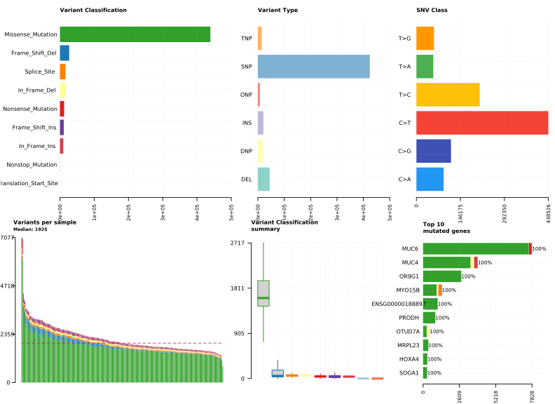
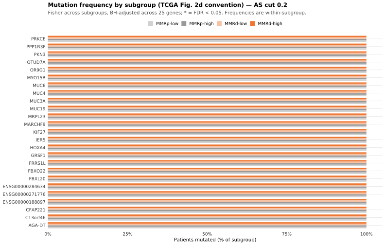

ATTEND — 08. TP53 and the gene panels
sceriff0
2026-09-06
Last updated: 2026-09-25
Checks: 7 0
Knit directory:
attend_aneuploidy/analysis/
This reproducible R Markdown analysis was created with workflowr (version 1.7.2). The Checks tab describes the reproducibility checks that were applied when the results were created. The Past versions tab lists the development history.
Great! Since the R Markdown file has been committed to the Git repository, you know the exact version of the code that produced these results.
Great job! The global environment was empty. Objects defined in the global environment can affect the analysis in your R Markdown file in unknown ways. For reproduciblity it’s best to always run the code in an empty environment.
The command set.seed(20260622) was run prior to running
the code in the R Markdown file. Setting a seed ensures that any results
that rely on randomness, e.g. subsampling or permutations, are
reproducible.
Great job! Recording the operating system, R version, and package versions is critical for reproducibility.
Nice! There were no cached chunks for this analysis, so you can be confident that you successfully produced the results during this run.
Great job! Using relative paths to the files within your workflowr project makes it easier to run your code on other machines.
Great! You are using Git for version control. Tracking code development and connecting the code version to the results is critical for reproducibility.
The results in this page were generated with repository version 395a71c. See the Past versions tab to see a history of the changes made to the R Markdown and HTML files.
Note that you need to be careful to ensure that all relevant files for
the analysis have been committed to Git prior to generating the results
(you can use wflow_publish or
wflow_git_commit). workflowr only checks the R Markdown
file, but you know if there are other scripts or data files that it
depends on. Below is the status of the Git repository when the results
were generated:
Ignored files:
Ignored: .Rhistory
Ignored: .Rproj.user/
Ignored: .mcr_cache/
Ignored: data/aneu_scores.csv
Ignored: data/attend_barcodes.csv
Ignored: data/attend_data.xlsx
Ignored: data/clinical_gianlu_data.csv
Ignored: data/cnv_annotations/
Ignored: data/gistic/
Ignored: data/hrd_scores.csv
Ignored: data/msi_scores.csv
Ignored: data/old2_gistic/
Ignored: data/old_gistic/
Ignored: data/seg/
Ignored: data/tcga_2013/
Ignored: data/tmb_scores.csv
Ignored: data/variant_annotations/
Ignored: gistic2.sif
Ignored: output/clean_data/
Ignored: output/gistic_input/
Note that any generated files, e.g. HTML, png, CSS, etc., are not included in this status report because it is ok for generated content to have uncommitted changes.
These are the previous versions of the repository in which changes were
made to the R Markdown
(analysis/08-tp53-and-gene-panels.Rmd) and HTML
(docs/08-tp53-and-gene-panels.html) files. If you’ve
configured a remote Git repository (see ?wflow_git_remote),
click on the hyperlinks in the table below to view the files as they
were in that past version.
| File | Version | Author | Date | Message |
|---|---|---|---|---|
| Rmd | 0f67d88 | bolt3x | 2026-09-21 | :art: Every aneuploidy-keyed figure, at both cuts |
| Rmd | 0c4840a | bolt3x | 2026-09-14 | :art: One vocabulary, one order, and a page that says why a figure is missing |
| Rmd | 35342b0 | bolt3x | 2026-09-14 | :art: The fill scale was there, the fill mapping was not, so the boxes drew white |
| Rmd | 8666e4c | bolt3x | 2026-09-07 | :bug: A default is not a measurement — POLE in three tiers, mutation status in three states |
| Rmd | 793a8f2 | bolt3x | 2026-09-07 | :recycle: Reorder the site 00-11, split 07, fold concordance into 01, add ProMisE |
Question. Which genes are altered across this cohort — TP53, the MMR panel, the Wnt genes — and does mutation frequency differ between the aneuploidy x MMR subgroups? Cohort. All 245 patients. Reads. The per-sample MAFs in data/variant_annotations/, through load_maf_long(). Out of scope. Copy number at every resolution -> 10-recurrent-cna. The molecular classification that uses TP53 as its p53-abnormal surrogate -> 07-molecular-classification. Aneuploidy by mutation status within MMRd -> 04-aneuploidy-mmrd.
Report 07-molecular-classification uses TP53 once, as a single binary surrogate for the p53-abnormal group. This report is where that gene, and the two configured panels beside it, are actually looked at: which patients carry what, how often, and whether the frequencies move across the aneuploidy x MMR subgroups.
The panels are configured in one place
(attend_gene_panel = the MMR genes,
attend_gene_panel_wnt = CTNNB1/APC, deliberately not folded
into the MMR union) and read from there by both this report and the
master’s panel_pathogenic column, so the two cannot
disagree about what “panel-altered” means. Descriptive frequencies with
no significance testing unless a test is named at the
chunk.
The mutation landscape
Oncoplots follow the TCGA UCEC conventions (Kandoth et al., Nature 2013, papers/nature12113.pdf): patients on the horizontal axis, genes stacked vertically, covariates as annotation bars, and a per-subgroup frequency comparison matching their Fig. 2d. The rationale for each convention is in 00-methods.
The oncoplot annotation carries exactly those two TMB tracks, so reading the two rows against each other shows directly whether the germline correction moves any patient across the TMB-high/low boundary.
Building the annotated MAF
Every per-sample MAF in data/variant_annotations/ is read into one object. Tumor_Sample_Barcode is taken from the file name and translated to pid through the same barcode crosswalk 01-data-integration used, then the per-patient covariate classes are attached as maftools clinicalData so they can be drawn as annotation tracks.
Watch the mapped-sample count printed at the end: samples that fail to map carry no covariates and will appear with blank annotation bars.
cw <- build_barcode_pid(load_gianlu_clinical_data(), make_id_cfg())
maf_long <- load_maf_long()
# TMB annotation tracks: the two definitions the pipeline plots, nothing else.
# All-NA definitions (ancestry corrected before clinical_col is set) are dropped.
tmb_defs05 <- tmb_defs_present(master)
tmb_defs05 <- tmb_defs05[vapply(tmb_defs05, function(col) any(!is.na(master[[col]])), logical(1))]
tmb_labs05 <- tmb_def_labels(tmb_defs05)
# Track names, not internal names: maftools prints clinicalFeatures column names onto
# the oncoplot itself, so these become visible axis labels.
tmb_cls05 <- tmb_def_track_names(tmb_defs05)
for (i in seq_along(tmb_defs05))
master[[tmb_cls05[i]]] <- tmb_class_of(master[[tmb_defs05[[i]]]])
# Recurrent arm-level CNV as annotation tracks: the top `attend_cnv$oncoplot_arms`
# most-altered chromosome arms (ASCETS calls) become gain/loss/neutral rows per patient.
# Knit-safe: no ASCETS data -> cnv_cls05 stays empty and the oncoplot is mutation-only.
cnv_cls05 <- character(0)
arm_rec <- recurrent_arm_calls(load_ascets_calls(), n_top = attend_cnv$oncoplot_arms)
if (!is.null(arm_rec) && nrow(arm_rec$wide_top) > 0) {
arm_by_pid <- arm_rec$wide_top |>
mutate(pid = cw$pid[match(ID, cw$barcode)]) |>
filter(!is.na(pid)) |>
select(pid, starts_with("CNV_"))
master <- left_join(master, arm_by_pid, by = "pid")
cnv_cls05 <- intersect(paste0("CNV_", arm_rec$top_arms), names(master))
}
clin <- maf_long |>
distinct(Tumor_Sample_Barcode) |>
mutate(pid = cw$pid[match(Tumor_Sample_Barcode, cw$barcode)]) |>
left_join(master |> select(pid, all_of(tmb_cls05),
MSI_class, MMR_class, all_of(cnv_cls05)),
by = "pid")
# ONE ANNOTATION BAR PER CUT, rather than one oncoplot per cut: the oncoplot is the same
# figure either way — same patients, same genes, same memo sort — and only the aneuploidy
# band changes, so drawing it twice would ask the reader to compare two dense grids instead
# of two adjacent rows. Labelled through as_label() like every other displayed class.
for (k in cuts) {
clin[[aneu_cut_cols[[format(k)]]]] <-
as_label(master_cuts$aneuploidy_class[match(paste(clin$pid, k),
paste(master_cuts$pid, master_cuts$as_cut))])
}
clin <- clin |>
select(Tumor_Sample_Barcode, all_of(unname(aneu_cut_cols)), all_of(tmb_cls05),
MSI_class, MMR_class, all_of(cnv_cls05))
# GISTIC2 focal peaks, if present, overlay gene-level amp/del directly in the mutation
# grid — the TCGA-standard focal layer. maftools::readGistic REQUIRES all four files and
# hard-stops if any is missing, so only take the overlay branch when all four are found.
gx <- find_gistic_files()
gistic_ok <- !is.null(gx) && !any(vapply(gx, is.null, logical(1)))
maf <- if (gistic_ok) {
maftools::read.maf(maf = maf_long, clinicalData = clin,
gisticAllLesionsFile = gx$all_lesions,
gisticAmpGenesFile = gx$amp_genes,
gisticDelGenesFile = gx$del_genes,
gisticScoresFile = gx$scores, verbose = FALSE)
} else {
maftools::read.maf(maf = maf_long, clinicalData = clin, verbose = FALSE)
}
cat("samples mapped to a pid:", sum(!is.na(clin$pid)), "/", nrow(clin),
"\nTMB tracks:", paste(tmb_labs05, collapse = " | "),
"\nrecurrent CNV arms annotated:", length(cnv_cls05),
"\nGISTIC focal overlay:", gistic_ok, "\n")samples mapped to a pid: 0 / 247
TMB tracks: TMB (normal) | TMB (ancestry corrected)
recurrent CNV arms annotated: 0
GISTIC focal overlay: TRUE mafAn object of class MAF
ID summary Mean Median
<char> <num> <num> <num>
1: NCBI_Build NA NA NA
2: Center NA NA NA
3: Samples 247 NA NA
4: nGenes 19225 NA NA
5: Frame_Shift_Del 27044 109.489879 53
6: Frame_Shift_Ins 11176 45.246964 34
7: In_Frame_Del 16043 64.951417 65
8: In_Frame_Ins 9703 39.283401 39
9: Missense_Mutation 439293 1778.514170 1614
10: Nonsense_Mutation 12237 49.542510 41
11: Nonstop_Mutation 674 2.728745 3
12: Splice_Site 16087 65.129555 58
13: Translation_Start_Site 60 0.242915 0
14: total 532317 2155.129555 1925
15: Amp 59248 239.870445 244
16: Del 27473 111.226721 101
17: CNV_total 86721 351.097166 349Cohort mutation summary
The standard maftools dashboard: variant classification and type counts, the transition/transversion split, per-sample mutation burden, and the most frequently mutated genes. This is the descriptive baseline — read it before the oncoplot to know which variant classes dominate, since that drives what the oncoplot colours show.
maftools::plotmafSummary(maf, addStat = "median", dashboard = TRUE)
Oncoplot — mutation landscape (memo-sorted)
Columns are patients, rows are genes, and the coloured cells are mutation types. The default maftools memo sort: samples are ordered so co-occurring and mutually exclusive alterations form the characteristic staircase, the primary mutation-landscape layout readers expect from an OncoPrint. The annotation-sorted panel below answers a different question — where alterations concentrate within a covariate — not this one.
covar <- c(unname(aneu_cut_cols), tmb_cls05, "MSI_class", "MMR_class", cnv_cls05)
maftools::oncoplot(maf, top = 20, clinicalFeatures = covar,
sortByAnnotation = FALSE, removeNonMutated = FALSE)
Oncoplot — sorted by annotation (enrichment view)
Samples are sorted by the annotation tracks rather than by mutation burden, so enrichment shows up as a block of colour lining up with an annotation band — TP53 concentrating in aneuploidy-high, or hypermutation concentrating in MMR-deficient, for example.
removeNonMutated = FALSE keeps unmutated patients in the figure, so the percentages down the side are out of the whole cohort, not out of mutated patients only.
covar <- c(unname(aneu_cut_cols), tmb_cls05, "MSI_class", "MMR_class", cnv_cls05)
maftools::oncoplot(maf, top = 20, clinicalFeatures = covar,
sortByAnnotation = TRUE, removeNonMutated = FALSE)
Oncoplot — the configured gene panels
The same figure restricted to the genes this pipeline tracks by name: the MMR panel (PMS2, MLH1, MSH2, MSH6, MSH3), the Wnt / β-catenin genes (CTNNB1, APC), and TP53. Genes absent from the MAF entirely are dropped by the intersection below rather than drawn as empty rows.
panel_genes <- unique(c(attend_genes_per_gene, "TP53"))
panel <- intersect(panel_genes, as.character(maftools::getGeneSummary(maf)$Hugo_Symbol))
if (length(panel) > 0) {
maftools::oncoplot(maf, genes = panel, clinicalFeatures = covar,
sortByAnnotation = TRUE, removeNonMutated = FALSE)
} else {
note_skip("None of the configured panel genes are mutated in this cohort.")
}
Positional clustering within genes — OncodriveCLUST
Which genes carry mutations piled onto a few codons rather than spread along their length. Built from the same per-sample MAFs in data/variant_annotations/ as the oncoplots, using the amino-acid column the annotator emitted (attend_maf$protein_col, resolved by maf_protein_col()) — positions come from that column alone, so the chunk is skipped entirely when no annotator supplied one rather than run on a fallback that would mean something else.
Why this and not MutSigCV. MutSigCV asks whether a gene is mutated above a background rate it estimates from the cohort’s own mutations plus covariates. Two properties of this cohort break that: ~40 samples make the per-gene rate estimate unstable, and the data are tumour-only, so residual germline inflates the counts in the ancestry-dependent way 00-methods documents for TMB — and MutSigCV has no germline model, so it would absorb that leakage into the background. OncodriveCLUST instead compares each gene’s mutations against its own positional distribution, needing no cohort-wide rate model, which is why it degrades gracefully here. The two are not substitutes: this identifies hotspot-like genes, not drivers. For a driver list, TCGA’s published significantly-mutated genes are the external reference, the same role attend_scna$panel plays for peaks.
Exploratory, and the q-values are its own background estimate over the top genes, not a genome-wide claim. Read it as a shortlist, not a result.
prot <- maf_protein_col(maf_long)
if (!length(prot)) {
cat("No protein-change column in the MAFs (looked for: ",
paste(attend_maf$protein_col, collapse = ", "),
"). OncodriveCLUST needs codon positions, so this is skipped.\n", sep = "")
} else {
# minMut = 3 matches the Fisher comparison above: a gene mutated once or twice has no
# positional distribution to test, and oncodrive() errors rather than skips on some
# such inputs, so the filter is set here rather than left to the default.
od <- tryCatch(maftools::oncodrive(maf = maf, AACol = prot[1], minMut = 3,
pvalMethod = "zscore"),
error = function(e) { note_skip("oncodrive(): ", conditionMessage(e)); NULL })
if (is.null(od) || !nrow(od)) {
cat("OncodriveCLUST returned nothing at minMut = 3 — no gene has enough mutations ",
"to test for positional clustering.\n", sep = "")
} else {
cat("Protein-change column used:", prot[1],
"| genes tested:", nrow(od),
"| fdr < 0.1:", sum(od$fdr < 0.1, na.rm = TRUE), "\n\n")
print(knitr::kable(head(as.data.frame(od), 15), digits = 4,
caption = "OncodriveCLUST: positional clustering per gene (exploratory)"))
if (any(od$fdr < 0.1, na.rm = TRUE))
maftools::plotOncodrive(res = od, fdrCutOff = 0.1, useFraction = TRUE)
}
} | | | 0% | | | 1% | |= | 1% | |= | 2% | |== | 2% | |== | 3% | |== | 4% | |=== | 4% | |=== | 5% | |==== | 5% | |==== | 6% | |===== | 6% | |===== | 7% | |===== | 8% | |====== | 8% | |====== | 9% | |======= | 9% | |======= | 10% | |======= | 11% | |======== | 11% | |======== | 12% | |========= | 12% | |========= | 13% | |========= | 14% | |========== | 14% | |========== | 15% | |=========== | 15% | |=========== | 16% | |============ | 16% | |============ | 17% | |============ | 18% | |============= | 18% | |============= | 19% | |============== | 19% | |============== | 20% | |============== | 21% | |=============== | 21% | |=============== | 22% | |================ | 22% | |================ | 23% | |================ | 24% | |================= | 24% | |================= | 25% | |================== | 25% | |================== | 26% | |=================== | 26% | |=================== | 27% | |=================== | 28% | |==================== | 28% | |==================== | 29% | |===================== | 29% | |===================== | 30% | |===================== | 31% | |====================== | 31% | |====================== | 32% | |======================= | 32% | |======================= | 33% | |======================= | 34% | |======================== | 34% | |======================== | 35% | |========================= | 35% | |========================= | 36% | |========================== | 36% | |========================== | 37% | |========================== | 38% | |=========================== | 38% | |=========================== | 39% | |============================ | 39% | |============================ | 40% | |============================ | 41% | |============================= | 41% | |============================= | 42% | |============================== | 42% | |============================== | 43% | |============================== | 44% | |=============================== | 44% | |=============================== | 45% | |================================ | 45% | |================================ | 46% | |================================= | 46% | |================================= | 47% | |================================= | 48% | |================================== | 48% | |================================== | 49% | |=================================== | 49% | |=================================== | 50% | |=================================== | 51% | |==================================== | 51% | |==================================== | 52% | |===================================== | 52% | |===================================== | 53% | |===================================== | 54% | |====================================== | 54% | |====================================== | 55% | |======================================= | 55% | |======================================= | 56% | |======================================== | 56% | |======================================== | 57% | |======================================== | 58% | |========================================= | 58% | |========================================= | 59% | |========================================== | 59% | |========================================== | 60% | |========================================== | 61% | |=========================================== | 61% | |=========================================== | 62% | |============================================ | 62% | |============================================ | 63% | |============================================ | 64% | |============================================= | 64% | |============================================= | 65% | |============================================== | 65% | |============================================== | 66% | |=============================================== | 66% | |=============================================== | 67% | |=============================================== | 68% | |================================================ | 68% | |================================================ | 69% | |================================================= | 69% | |================================================= | 70% | |================================================= | 71% | |================================================== | 71% | |================================================== | 72% | |=================================================== | 72% | |=================================================== | 73% | |=================================================== | 74% | |==================================================== | 74% | |==================================================== | 75% | |===================================================== | 75% | |===================================================== | 76% | |====================================================== | 76% | |====================================================== | 77% | |====================================================== | 78% | |======================================================= | 78% | |======================================================= | 79% | |======================================================== | 79% | |======================================================== | 80% | |======================================================== | 81% | |========================================================= | 81% | |========================================================= | 82% | |========================================================== | 82% | |========================================================== | 83% | |========================================================== | 84% | |=========================================================== | 84% | |=========================================================== | 85% | |============================================================ | 85% | |============================================================ | 86% | |============================================================= | 86% | |============================================================= | 87% | |============================================================= | 88% | |============================================================== | 88% | |============================================================== | 89% | |=============================================================== | 89% | |=============================================================== | 90% | |=============================================================== | 91% | |================================================================ | 91% | |================================================================ | 92% | |================================================================= | 92% | |================================================================= | 93% | |================================================================= | 94% | |================================================================== | 94% | |================================================================== | 95% | |=================================================================== | 95% | |=================================================================== | 96% | |==================================================================== | 96% | |==================================================================== | 97% | |==================================================================== | 98% | |===================================================================== | 98% | |===================================================================== | 99% | |======================================================================| 99% | |======================================================================| 100% | | | 0% | | | 1% | |= | 1% | |= | 2% | |== | 2% | |== | 3% | |== | 4% | |=== | 4% | |=== | 5% | |==== | 5% | |==== | 6% | |===== | 6% | |===== | 7% | |===== | 8% | |====== | 8% | |====== | 9% | |======= | 9% | |======= | 10% | |======= | 11% | |======== | 11% | |======== | 12% | |========= | 12% | |========= | 13% | |========= | 14% | |========== | 14% | |========== | 15% | |=========== | 15% | |=========== | 16% | |============ | 16% | |============ | 17% | |============ | 18% | |============= | 18% | |============= | 19% | |============== | 19% | |============== | 20% | |============== | 21% | |=============== | 21% | |=============== | 22% | |================ | 22% | |================ | 23% | |================ | 24% | |================= | 24% | |================= | 25% | |================== | 25% | |================== | 26% | |=================== | 26% | |=================== | 27% | |=================== | 28% | |==================== | 28% | |==================== | 29% | |===================== | 29% | |===================== | 30% | |===================== | 31% | |====================== | 31% | |====================== | 32% | |======================= | 32% | |======================= | 33% | |======================= | 34% | |======================== | 34% | |======================== | 35% | |========================= | 35% | |========================= | 36% | |========================== | 36% | |========================== | 37% | |========================== | 38% | |=========================== | 38% | |=========================== | 39% | |============================ | 39% | |============================ | 40% | |============================ | 41% | |============================= | 41% | |============================= | 42% | |============================== | 42% | |============================== | 43% | |============================== | 44% | |=============================== | 44% | |=============================== | 45% | |================================ | 45% | |================================ | 46% | |================================= | 46% | |================================= | 47% | |================================= | 48% | |================================== | 48% | |================================== | 49% | |=================================== | 49% | |=================================== | 50% | |=================================== | 51% | |==================================== | 51% | |==================================== | 52% | |===================================== | 52% | |===================================== | 53% | |===================================== | 54% | |====================================== | 54% | |====================================== | 55% | |======================================= | 55% | |======================================= | 56% | |======================================== | 56% | |======================================== | 57% | |======================================== | 58% | |========================================= | 58% | |========================================= | 59% | |========================================== | 59% | |========================================== | 60% | |========================================== | 61% | |=========================================== | 61% | |=========================================== | 62% | |============================================ | 62% | |============================================ | 63% | |============================================ | 64% | |============================================= | 64% | |============================================= | 65% | |============================================== | 65% | |============================================== | 66% | |=============================================== | 66% | |=============================================== | 67% | |=============================================== | 68% | |================================================ | 68% | |================================================ | 69% | |================================================= | 69% | |================================================= | 70% | |================================================= | 71% | |================================================== | 71% | |================================================== | 72% | |=================================================== | 72% | |=================================================== | 73% | |=================================================== | 74% | |==================================================== | 74% | |==================================================== | 75% | |===================================================== | 75% | |===================================================== | 76% | |====================================================== | 76% | |====================================================== | 77% | |====================================================== | 78% | |======================================================= | 78% | |======================================================= | 79% | |======================================================== | 79% | |======================================================== | 80% | |======================================================== | 81% | |========================================================= | 81% | |========================================================= | 82% | |========================================================== | 82% | |========================================================== | 83% | |========================================================== | 84% | |=========================================================== | 84% | |=========================================================== | 85% | |============================================================ | 85% | |============================================================ | 86% | |============================================================= | 86% | |============================================================= | 87% | |============================================================= | 88% | |============================================================== | 88% | |============================================================== | 89% | |=============================================================== | 89% | |=============================================================== | 90% | |=============================================================== | 91% | |================================================================ | 91% | |================================================================ | 92% | |================================================================= | 92% | |================================================================= | 93% | |================================================================= | 94% | |================================================================== | 94% | |================================================================== | 95% | |=================================================================== | 95% | |=================================================================== | 96% | |==================================================================== | 96% | |==================================================================== | 97% | |==================================================================== | 98% | |===================================================================== | 98% | |===================================================================== | 99% | |======================================================================| 99% | |======================================================================| 100%Protein-change column used: Protein_Change | genes tested: 12280 | fdr < 0.1: 0
Table: OncodriveCLUST: positional clustering per gene (exploratory)
|Hugo_Symbol | Frame_Shift_Del| Frame_Shift_Ins| In_Frame_Del| In_Frame_Ins| Missense_Mutation| Nonsense_Mutation| Nonstop_Mutation| Splice_Site| Translation_Start_Site| total| Amp| Del| CNV_total| MutatedSamples| AlteredSamples| clusters| muts_in_clusters| clusterScores| protLen| zscore| pval| fdr| fract_muts_in_clusters|
|:-----------|---------------:|---------------:|------------:|------------:|-----------------:|-----------------:|----------------:|-----------:|----------------------:|-----:|---:|---:|---------:|--------------:|--------------:|--------:|----------------:|-------------:|-------:|-------:|------:|------:|----------------------:|
|A1BG | 1| 0| 0| 0| 14| 0| 0| 0| 0| 15| 0| 0| 0| 14| 14| 1| 2| 0.1333| 495| -2.2786| 0.9887| 0.9933| 0.1333|
|A1CF | 0| 0| 0| 0| 13| 0| 0| 0| 0| 13| 0| 0| 0| 13| 13| 1| 4| 0.3077| 602| -1.4993| 0.9331| 0.9933| 0.3077|
|A2M | 0| 0| 0| 0| 17| 1| 0| 2| 0| 20| 0| 0| 0| 19| 19| 2| 5| 0.2778| 1474| -1.6330| 0.9488| 0.9933| 0.2500|
|A2ML1 | 3| 2| 0| 0| 61| 2| 0| 2| 0| 70| 0| 0| 0| 59| 59| 8| 49| 0.7206| 1454| 0.3461| 0.3646| 0.9933| 0.7000|
|A4GNT | 0| 0| 0| 0| 11| 0| 0| 0| 0| 11| 0| 0| 0| 11| 11| 2| 10| 0.9091| 340| 1.1886| 0.1173| 0.9933| 0.9091|
|AACS | 1| 0| 0| 0| 10| 0| 0| 0| 0| 11| 0| 0| 0| 10| 10| 1| 3| 0.2727| 672| -1.6556| 0.9511| 0.9933| 0.2727|
|AADAC | 2| 0| 0| 0| 3| 0| 4| 0| 0| 9| 0| 0| 0| 9| 9| 2| 6| 0.6667| 399| 0.1051| 0.4582| 0.9933| 0.6667|
|AADACL2 | 0| 0| 0| 0| 10| 0| 0| 2| 0| 12| 0| 0| 0| 12| 12| 2| 6| 0.5177| 401| -0.5608| 0.7125| 0.9933| 0.5000|
|AADACL3 | 1| 0| 0| 0| 14| 0| 0| 0| 0| 15| 0| 0| 0| 14| 14| 2| 7| 0.4667| 350| -0.7888| 0.7849| 0.9933| 0.4667|
|AADAT | 5| 0| 0| 0| 37| 0| 0| 0| 0| 42| 0| 0| 0| 37| 37| 1| 41| 0.8869| 425| 1.0894| 0.1380| 0.9933| 0.9762|
|AAGAB | 0| 0| 0| 0| 14| 0| 0| 1| 0| 15| 0| 0| 0| 15| 15| 3| 10| 0.6786| 315| 0.1583| 0.4371| 0.9933| 0.6667|
|AAK1 | 0| 0| 1| 0| 30| 0| 0| 2| 0| 33| 0| 0| 0| 31| 31| 2| 24| 0.7742| 961| 0.5857| 0.2790| 0.9933| 0.7273|
|AAMP | 4| 0| 0| 0| 4| 0| 0| 10| 0| 18| 0| 0| 0| 17| 17| 1| 3| 0.3750| 434| -1.1985| 0.8846| 0.9933| 0.1667|
|AANAT | 0| 0| 0| 0| 11| 0| 0| 0| 0| 11| 0| 0| 0| 11| 11| 1| 2| 0.1818| 252| -2.0619| 0.9804| 0.9933| 0.1818|
|AAR2 | 0| 2| 0| 0| 45| 0| 0| 0| 0| 47| 0| 0| 0| 31| 31| 4| 45| 0.8120| 384| 0.7547| 0.2252| 0.9933| 0.9574|Mutation frequency by subgroup — the TCGA Fig. 2d view
This is the figure the oncoplot cannot give you. An oncoplot shows which patients are mutated; it does not say whether a gene is mutated at a different rate between subgroups, and it offers no multiple-testing control.
Following TCGA Fig. 2d, each gene’s mutation frequency is computed within each subgroup and the subgroups are shown side by side. The subgroups are the four scna_group strata — MMR status crossed with aneuploidy class — which is the split the rest of this report and the classification report use.
The test. For each gene, a Fisher exact test across the subgroups, then Benjamini–Hochberg FDR across the genes tested. Genes reaching FDR < 0.05 are marked with an asterisk, exactly as TCGA marks them. Only genes mutated in at least min_mut patients are tested — testing a gene mutated once produces noise, not a result.
Frequencies are within-group: the denominator is that subgroup’s own patient count, so a small subgroup shows large jumps per patient. Group sizes are printed with the table. The whole comparison is run once per aneuploidy cut (0.1 and 0.2), because the subgroups themselves are what the cut redefines — the genes and the MAF are identical in both passes, only which patients sit in MMRd-high and MMRp-high moves. Each pass carries its own BH correction across its own genes; the two passes are the same patients and are not independent evidence.
min_mut <- 3 # a gene must be mutated in at least this many patients to be tested
top_freq <- 25 # genes shown, ranked by overall mutation frequency
mut_by_pid <- maf_long |>
mutate(pid = cw$pid[match(Tumor_Sample_Barcode, cw$barcode)]) |>
filter(!is.na(pid)) |>
distinct(pid, Hugo_Symbol)
# ⚠️ THE DENOMINATOR IS THE SEQUENCED PATIENTS, NOT THE COHORT.
# `mutated` below is filled from the long MAF with replace_na(FALSE), which is right for a
# patient whose MAF simply has no row for that gene — that IS a wild-type call. It is wrong
# for a patient with no MAF at all: they enter every gene's denominator as unmutated,
# deflating every within-subgroup frequency and biasing the Fisher tests toward the null.
# So the cohort is restricted to patients the MAF actually reached, and the excluded count
# is printed rather than absorbed.
sequenced_pids <- unique(mut_by_pid$pid)
for (k in cuts) {
grp_tbl_all <- master_cuts |>
filter(as_cut == k, !is.na(scna_group)) |>
select(pid, scna_group) |>
mutate(scna_group = factor(scna_group, levels = attend_scna$group_levels))
grp_tbl <- grp_tbl_all |> filter(pid %in% sequenced_pids) |> droplevels()
n_dropped <- nrow(grp_tbl_all) - nrow(grp_tbl)
n_by_grp <- count(grp_tbl, scna_group, name = "n_group")
if (nrow(grp_tbl) > 0 && dplyr::n_distinct(grp_tbl$scna_group) >= 2) {
print(knitr::kable(n_by_grp,
caption = paste0("AS cut ", k, " — patients per subgroup, the denominators below. ",
"Restricted to the patients the MAF reached; ", n_dropped,
" patient(s) with a subgroup but no MAF are excluded rather than ",
"counted as wild-type.")))
genes_keep <- mut_by_pid |>
semi_join(grp_tbl, by = "pid") |>
count(Hugo_Symbol, name = "n_mut") |>
filter(n_mut >= min_mut) |>
slice_max(n_mut, n = top_freq, with_ties = FALSE) |>
pull(Hugo_Symbol)
freq_tbl <- tidyr::crossing(pid = grp_tbl$pid, Hugo_Symbol = genes_keep) |>
left_join(mut_by_pid |> mutate(mutated = TRUE), by = c("pid", "Hugo_Symbol")) |>
mutate(mutated = replace_na(mutated, FALSE)) |>
left_join(grp_tbl, by = "pid") |>
group_by(Hugo_Symbol, scna_group) |>
summarise(n_mut = sum(mutated), n = n(), freq = n_mut / n, .groups = "drop")
# Fisher across subgroups per gene, then BH across genes (TCGA marks FDR < 0.05).
fdr_tbl <- freq_tbl |>
group_by(Hugo_Symbol) |>
summarise(p = {
m <- rbind(n_mut, n - n_mut)
tryCatch(stats::fisher.test(m, simulate.p.value = TRUE, B = 1e4)$p.value,
error = function(e) NA_real_)
}, .groups = "drop") |>
mutate(fdr = stats::p.adjust(p, method = "BH"),
star = if_else(!is.na(fdr) & fdr < 0.05, "*", ""))
plot_tbl <- freq_tbl |>
left_join(fdr_tbl, by = "Hugo_Symbol") |>
mutate(Hugo_Symbol = fct_reorder(paste0(Hugo_Symbol, star), freq, .fun = max))
print(ggplot(plot_tbl, aes(Hugo_Symbol, freq, fill = scna_group)) +
geom_col(position = position_dodge(width = 0.8), width = 0.75) +
coord_flip() +
# scna_group is MMR x aneuploidy, and both components already own a colour. Without this
# scale the bars fell through to ggplot's default hue wheel — four colours from no
# palette. attend_scna_cols keeps MMR as the hue (rule [A]: MMRp grey, MMRd orange) and
# the aneuploidy pole as the saturation, so both splits are readable in one legend.
scale_fill_manual(values = attend_scna_cols, name = NULL) +
scale_y_continuous(labels = scales::percent_format(accuracy = 1),
expand = expansion(mult = c(0, 0.05))) +
labs(title = paste0("Mutation frequency by subgroup (TCGA Fig. 2d convention) — AS cut ", k),
subtitle = paste0("Fisher across subgroups, BH-adjusted across ",
nrow(fdr_tbl), " genes; * = FDR < 0.05. ",
"Frequencies are within-subgroup."),
x = NULL, y = "Patients mutated (% of subgroup)", fill = NULL) +
attend_theme() +
theme(legend.position = "top"))
print(knitr::kable(fdr_tbl |> arrange(fdr) |> mutate(across(c(p, fdr), ~ signif(.x, 3))),
caption = paste0("AS cut ", k,
" — per-gene Fisher test across subgroups, BH-adjusted")))
} else {
note_skip("AS cut ", k, ": fewer than two non-empty scna_group strata — subgroup ",
"frequency comparison skipped.")
}
}
Table: AS cut 0.1 — patients per subgroup, the denominators below. Restricted to the patients the MAF reached; 0 patient(s) with a subgroup but no MAF are excluded rather than counted as wild-type.
|scna_group | n_group|
|:----------|-------:|
|MMRp-low | 67|
|MMRp-high | 57|
|MMRd-low | 100|
|MMRd-high | 9|
Table: AS cut 0.1 — per-gene Fisher test across subgroups, BH-adjusted
|Hugo_Symbol | p| fdr|star |
|:---------------|--:|---:|:----|
|AGA-DT | NA| NA| |
|C13orf46 | NA| NA| |
|CFAP221 | NA| NA| |
|ENSG00000188897 | NA| NA| |
|ENSG00000271776 | NA| NA| |
|ENSG00000284634 | NA| NA| |
|FBXL20 | NA| NA| |
|FBXO22 | NA| NA| |
|FRRS1L | NA| NA| |
|GRSF1 | NA| NA| |
|HOXA4 | NA| NA| |
|IER5 | NA| NA| |
|KIF27 | NA| NA| |
|MARCHF9 | NA| NA| |
|MRPL23 | NA| NA| |
|MUC19 | NA| NA| |
|MUC3A | NA| NA| |
|MUC4 | NA| NA| |
|MUC6 | NA| NA| |
|MYO15B | NA| NA| |
|OR9G1 | NA| NA| |
|OTUD7A | NA| NA| |
|PKN3 | NA| NA| |
|PPP1R3F | NA| NA| |
|PRKCE | NA| NA| |
Table: AS cut 0.2 — patients per subgroup, the denominators below. Restricted to the patients the MAF reached; 0 patient(s) with a subgroup but no MAF are excluded rather than counted as wild-type.
|scna_group | n_group|
|:----------|-------:|
|MMRp-low | 89|
|MMRp-high | 35|
|MMRd-low | 105|
|MMRd-high | 4|
Table: AS cut 0.2 — per-gene Fisher test across subgroups, BH-adjusted
|Hugo_Symbol | p| fdr|star |
|:---------------|--:|---:|:----|
|AGA-DT | NA| NA| |
|C13orf46 | NA| NA| |
|CFAP221 | NA| NA| |
|ENSG00000188897 | NA| NA| |
|ENSG00000271776 | NA| NA| |
|ENSG00000284634 | NA| NA| |
|FBXL20 | NA| NA| |
|FBXO22 | NA| NA| |
|FRRS1L | NA| NA| |
|GRSF1 | NA| NA| |
|HOXA4 | NA| NA| |
|IER5 | NA| NA| |
|KIF27 | NA| NA| |
|MARCHF9 | NA| NA| |
|MRPL23 | NA| NA| |
|MUC19 | NA| NA| |
|MUC3A | NA| NA| |
|MUC4 | NA| NA| |
|MUC6 | NA| NA| |
|MYO15B | NA| NA| |
|OR9G1 | NA| NA| |
|OTUD7A | NA| NA| |
|PKN3 | NA| NA| |
|PPP1R3F | NA| NA| |
|PRKCE | NA| NA| |sessionInfo()R version 4.3.2 (2023-10-31)
Platform: x86_64-pc-linux-gnu (64-bit)
Running under: Rocky Linux 9.5 (Blue Onyx)
Matrix products: default
BLAS/LAPACK: FlexiBLAS OPENBLAS; LAPACK version 3.11.0
locale:
[1] LC_CTYPE=C.UTF-8 LC_NUMERIC=C LC_TIME=C.UTF-8
[4] LC_COLLATE=C.UTF-8 LC_MONETARY=C.UTF-8 LC_MESSAGES=C.UTF-8
[7] LC_PAPER=C.UTF-8 LC_NAME=C LC_ADDRESS=C
[10] LC_TELEPHONE=C LC_MEASUREMENT=C.UTF-8 LC_IDENTIFICATION=C
time zone: Europe/Rome
tzcode source: system (glibc)
attached base packages:
[1] stats graphics grDevices utils datasets methods base
other attached packages:
[1] data.table_1.18.4 readxl_1.5.0 fs_2.1.0 here_1.0.2
[5] lubridate_1.9.5 forcats_1.0.1 stringr_1.6.0 dplyr_1.2.1
[9] purrr_1.0.2 readr_2.2.0 tidyr_1.3.2 tibble_3.3.1
[13] ggplot2_4.0.3 tidyverse_2.0.0
loaded via a namespace (and not attached):
[1] gtable_0.3.6 xfun_0.58 bslib_0.9.0 lattice_0.22-5
[5] tzdb_0.5.0 vctrs_0.7.3 tools_4.3.2 generics_0.1.4
[9] parallel_4.3.2 pkgconfig_2.0.3 Matrix_1.6-4 RColorBrewer_1.1-3
[13] S7_0.2.2 lifecycle_1.0.5 compiler_4.3.2 farver_2.1.2
[17] git2r_0.33.0 httpuv_1.6.12 htmltools_0.5.9 sass_0.4.10
[21] yaml_2.3.12 later_1.4.8 pillar_1.11.1 crayon_1.5.3
[25] jquerylib_0.1.4 whisker_0.4.1 cachem_1.1.0 tidyselect_1.2.1
[29] digest_0.6.39 stringi_1.8.7 labeling_0.4.3 splines_4.3.2
[33] maftools_2.18.0 rprojroot_2.1.1 fastmap_1.2.0 grid_4.3.2
[37] cli_3.6.6 magrittr_2.0.5 dichromat_2.0-0.1 survival_3.8-11
[41] withr_3.0.3 scales_1.4.0 promises_1.5.0 bit64_4.8.6
[45] timechange_0.4.0 rmarkdown_2.31 bit_4.6.0 otel_0.2.0
[49] workflowr_1.7.2 cellranger_1.1.0 hms_1.1.4 DNAcopy_1.76.0
[53] evaluate_1.0.5 knitr_1.51 rlang_1.2.0 Rcpp_1.1.1-1.1
[57] glue_1.8.1 rstudioapi_0.15.0 vroom_1.7.1 jsonlite_2.0.0
[61] R6_2.6.1
sessionInfo()R version 4.3.2 (2023-10-31)
Platform: x86_64-pc-linux-gnu (64-bit)
Running under: Rocky Linux 9.5 (Blue Onyx)
Matrix products: default
BLAS/LAPACK: FlexiBLAS OPENBLAS; LAPACK version 3.11.0
locale:
[1] LC_CTYPE=C.UTF-8 LC_NUMERIC=C LC_TIME=C.UTF-8
[4] LC_COLLATE=C.UTF-8 LC_MONETARY=C.UTF-8 LC_MESSAGES=C.UTF-8
[7] LC_PAPER=C.UTF-8 LC_NAME=C LC_ADDRESS=C
[10] LC_TELEPHONE=C LC_MEASUREMENT=C.UTF-8 LC_IDENTIFICATION=C
time zone: Europe/Rome
tzcode source: system (glibc)
attached base packages:
[1] stats graphics grDevices utils datasets methods base
other attached packages:
[1] data.table_1.18.4 readxl_1.5.0 fs_2.1.0 here_1.0.2
[5] lubridate_1.9.5 forcats_1.0.1 stringr_1.6.0 dplyr_1.2.1
[9] purrr_1.0.2 readr_2.2.0 tidyr_1.3.2 tibble_3.3.1
[13] ggplot2_4.0.3 tidyverse_2.0.0
loaded via a namespace (and not attached):
[1] gtable_0.3.6 xfun_0.58 bslib_0.9.0 lattice_0.22-5
[5] tzdb_0.5.0 vctrs_0.7.3 tools_4.3.2 generics_0.1.4
[9] parallel_4.3.2 pkgconfig_2.0.3 Matrix_1.6-4 RColorBrewer_1.1-3
[13] S7_0.2.2 lifecycle_1.0.5 compiler_4.3.2 farver_2.1.2
[17] git2r_0.33.0 httpuv_1.6.12 htmltools_0.5.9 sass_0.4.10
[21] yaml_2.3.12 later_1.4.8 pillar_1.11.1 crayon_1.5.3
[25] jquerylib_0.1.4 whisker_0.4.1 cachem_1.1.0 tidyselect_1.2.1
[29] digest_0.6.39 stringi_1.8.7 labeling_0.4.3 splines_4.3.2
[33] maftools_2.18.0 rprojroot_2.1.1 fastmap_1.2.0 grid_4.3.2
[37] cli_3.6.6 magrittr_2.0.5 dichromat_2.0-0.1 survival_3.8-11
[41] withr_3.0.3 scales_1.4.0 promises_1.5.0 bit64_4.8.6
[45] timechange_0.4.0 rmarkdown_2.31 bit_4.6.0 otel_0.2.0
[49] workflowr_1.7.2 cellranger_1.1.0 hms_1.1.4 DNAcopy_1.76.0
[53] evaluate_1.0.5 knitr_1.51 rlang_1.2.0 Rcpp_1.1.1-1.1
[57] glue_1.8.1 rstudioapi_0.15.0 vroom_1.7.1 jsonlite_2.0.0
[61] R6_2.6.1